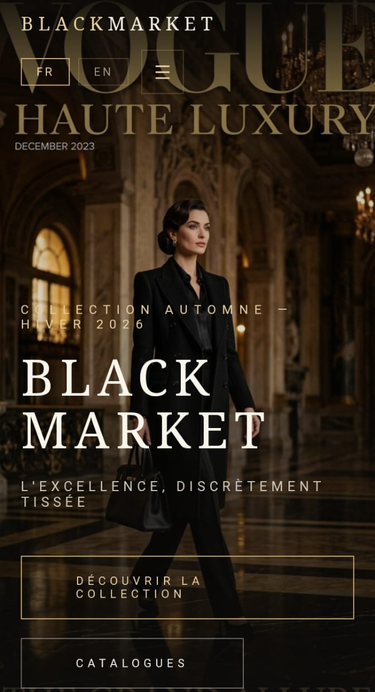
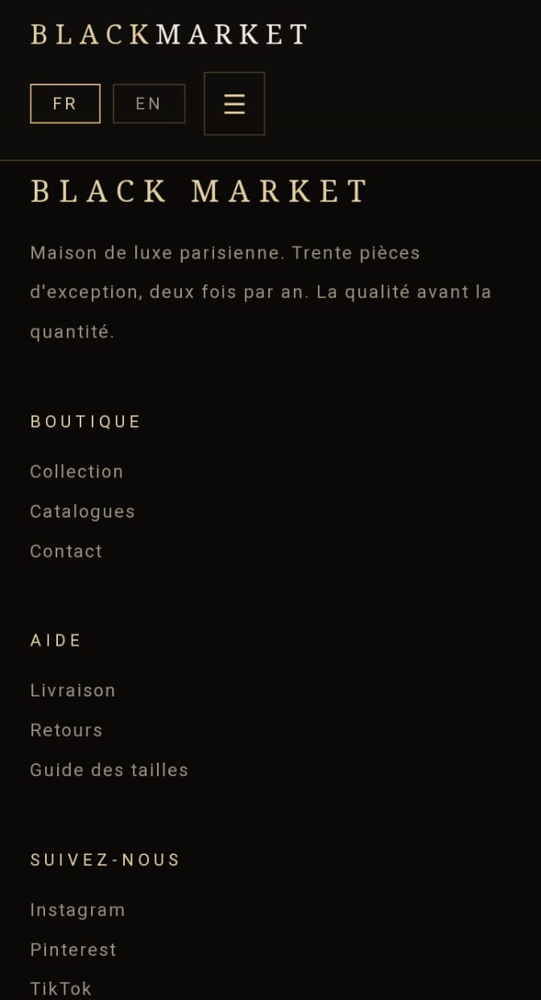
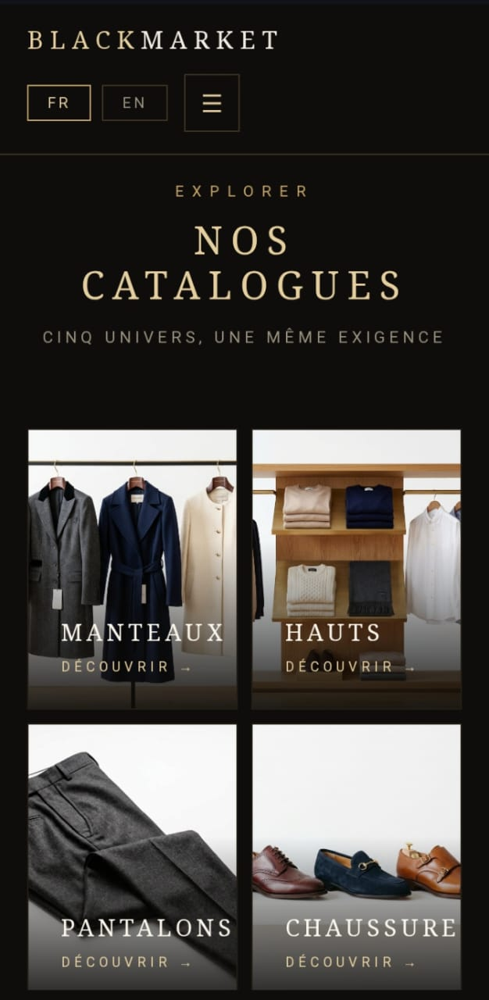
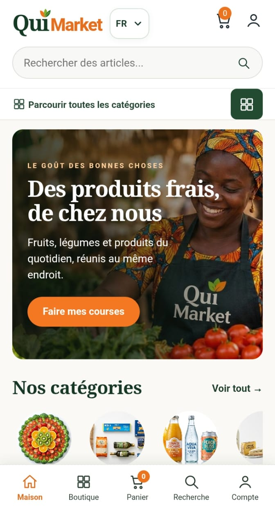
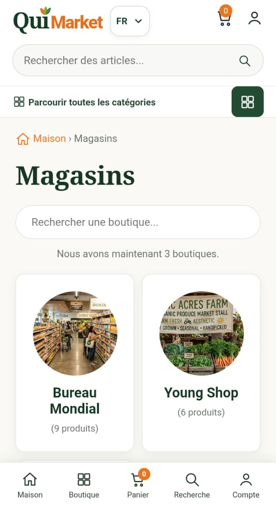
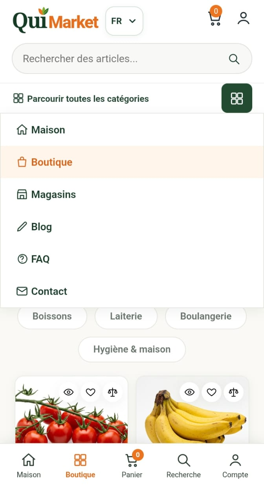
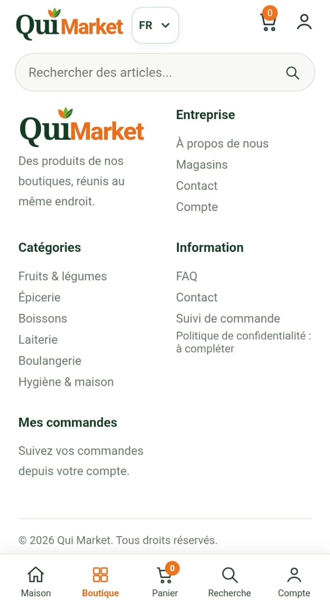
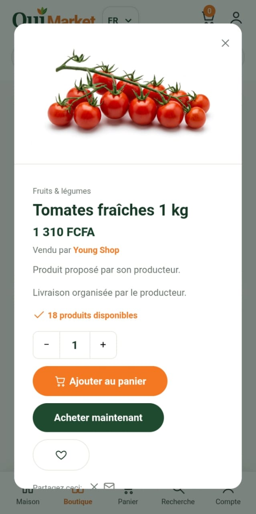
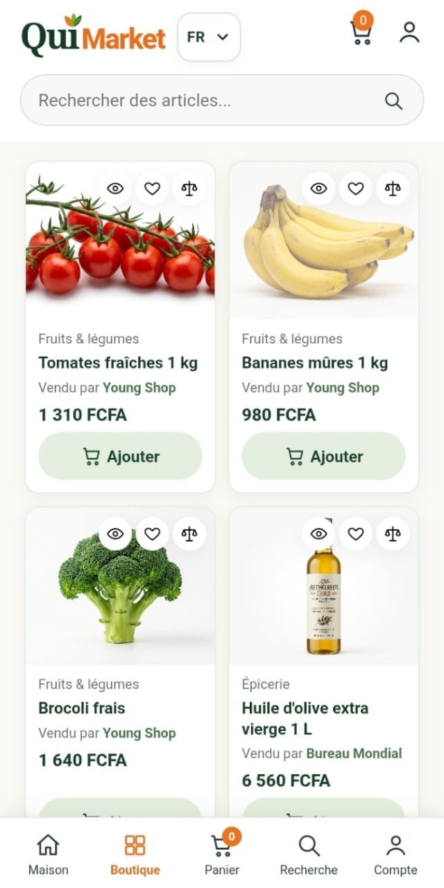

PROJETS
Des projets concrets.
Des expériences digitales.
Découvrez deux plateformes digitales : Black Market, boutique de mode, et Qui Market, plateforme de démonstration pour producteurs.
Voir les projets ↓PROJET 01 · BOUTIQUE EN LIGNE
Black Market.
Une boutique de vêtements et d’accessoires au style élégant, avec des collections et des catalogues organisés par catégorie.
Une expérience digitale
au ton luxe et discret.
Le site présente l’univers Black Market dans une identité sombre et dorée. Les visiteurs peuvent parcourir les collections et les catégories, en français ou en anglais.
- 01 Navigation bilingue FR / EN
- 02 Collections et catalogues
- 03 Manteaux, hauts, pantalons et chaussures



PROJET 02 · PLATEFORME DE DÉMONSTRATION
Qui Market.
Une plateforme qui permet aux producteurs de présenter leurs boutiques et leurs produits, et aux clients de parcourir le catalogue.
Les boutiques et les produits
réunis au même endroit.
Qui Market est une plateforme de démonstration. Les producteurs peuvent y présenter leurs boutiques et leurs produits ; les clients parcourent le catalogue et peuvent simuler une commande.
- 01 Présentation de plusieurs boutiques
- 02 Recherche, catégories et catalogue produits
- 03 Fiche produit et simulation de commande





